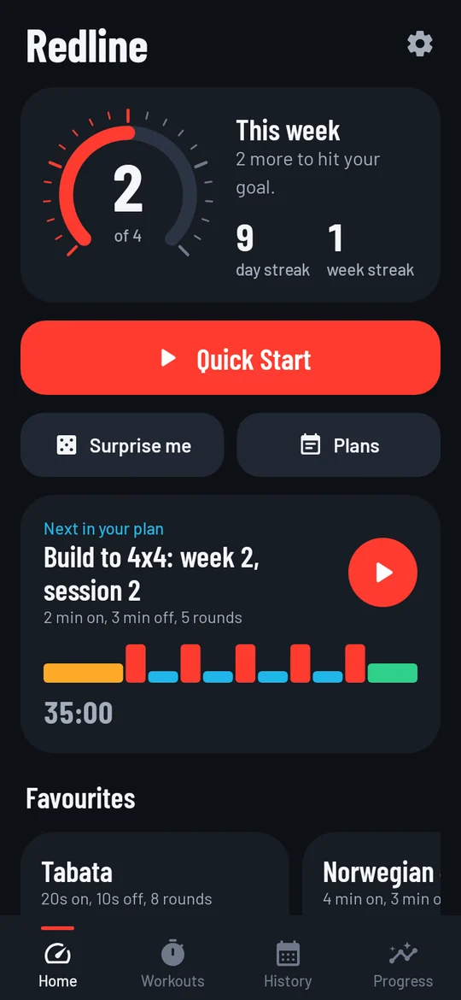
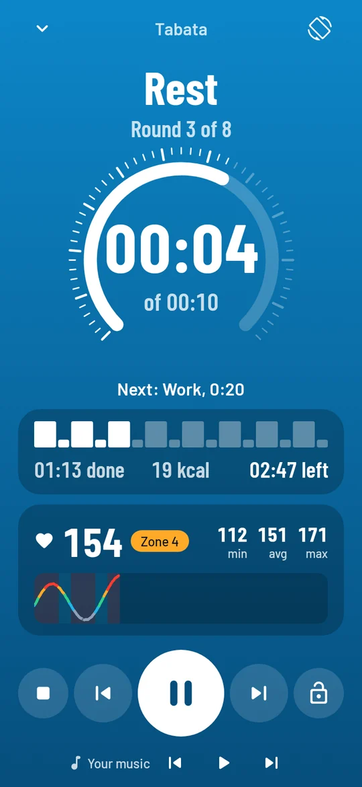
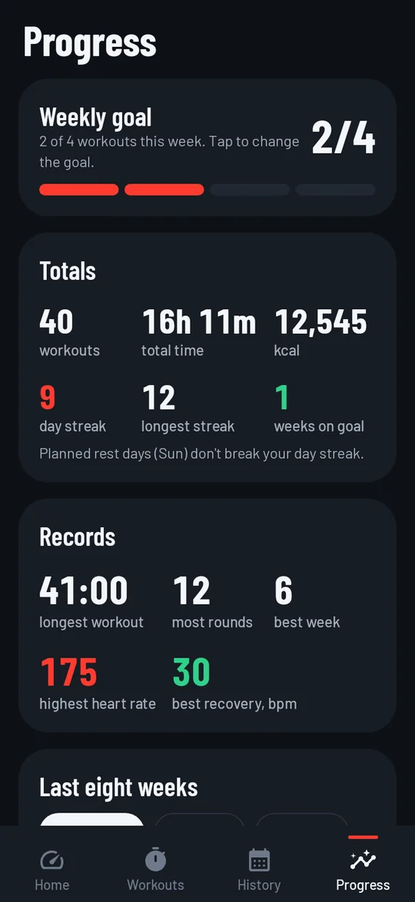
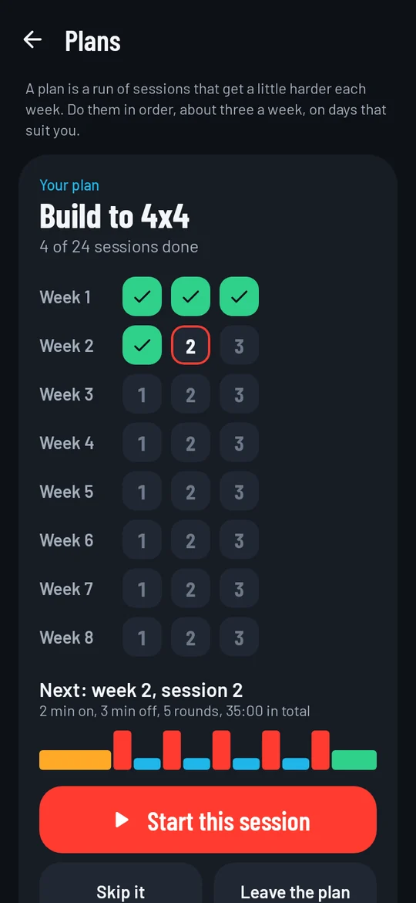
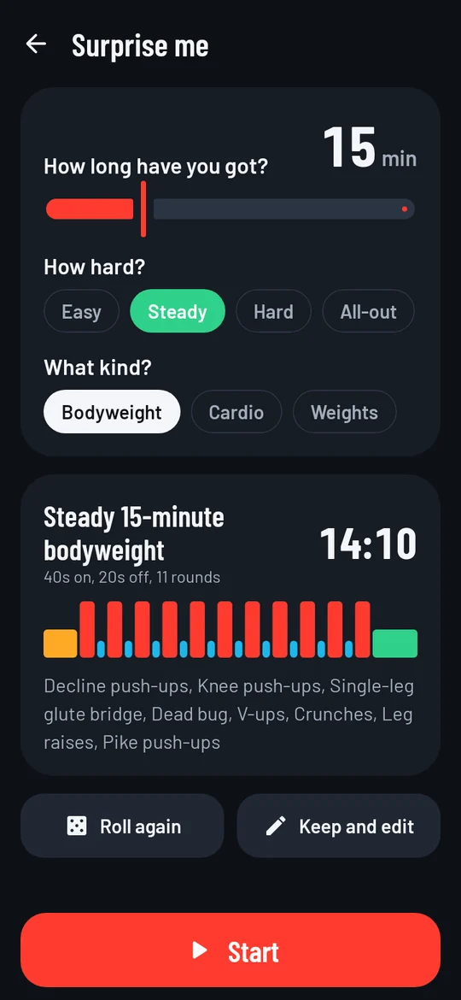
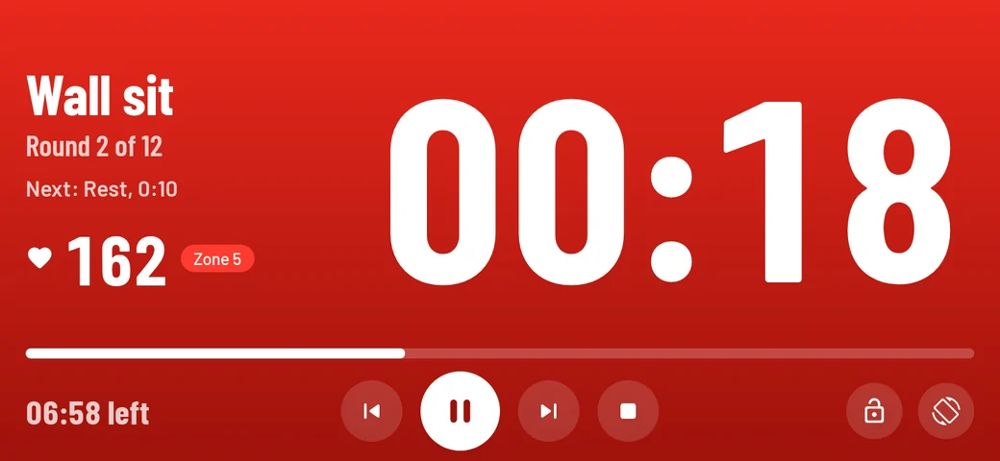

Go flat out. Redline counts the seconds.
Redline is an interval timer for Android. Pick a workout such as Tabata or the Norwegian 4x4, or build your own, and press Start. It fills the screen with the colour of each block, beeps and speaks every change, and keeps going with the screen off.
It is free, with no adverts and nothing to unlock. There is no account, and your workouts, your history and your heart-rate records stay on your phone.
Free, with nothing to unlock. Android 10 or later. No ads, no accounts. Compare · Release notes
Chrome may say the file might be harmful. It shows this for app files that do not come from Google Play. Choose Download anyway.
- Work0:20All out
- Rest0:10Breathe
- Rounds84:00 in all
- VoiceRound numbers, halfwayOn
- Heart rateChest strapPaired
How it works
Interval training is short spells of hard effort with easy spells between them. The timer's job is to tell you which one you are in, so that you never have to look at a clock.
Pick a workout
Choose one of the 36 that come with the app, tap Quick Start for a plain work and rest timer, or build your own. Each workout shows its blocks as a row of bars before you begin.
Press Start
You get a countdown to get ready, then the screen turns red for work and blue for rest. A beep and a voice mark every change, with ticks for the last few seconds.
See what you did
The session is saved with its time, rounds and calories, and with a heart-rate graph if you wore a sensor. It counts towards your weekly goal and your streak.
What it looks like
Dark, with one bold colour for each kind of block and numbers you can read mid-sprint.

HomeThis week against your goal, your streaks, Quick Start and the next session in your plan. WorkRed, with giant digits, the ring emptying, your heart rate and the time left in the workout. 
RestBlue, so you know where you are from across the room, with what comes next. A workout at a glanceEvery block drawn as a bar, the total time and the heart-rate target. After the sessionThe heart-rate graph, beats recovered in the rests and the time in each zone. 
ProgressYour weekly goal, totals, streaks, records and the last eight weeks. 
PlansMulti-week plans, ticked off session by session. 
Surprise meSay how long, how hard and what kind, and roll again until you like it.

Everything is in, and all of it is free
You can use Redline as a plain work and rest timer and never open a menu. The rest is there for when you want it.
- 36 ready-made workouts
- Tabata, EMOM, AMRAP, the Norwegian 4x4, fartleks, circuits, sprints, interval walking and boxing rounds, sorted into folders. Each one says what it is and who it suits.
- Build your own
- By rounds: warm-up, work, rest, rounds, sets, a break between sets and a cool-down. Or block by block, in any order, with a name on each block.
- Type it
- Write a workout as a line of text, such as
8x(20/10), and Redline lays it out. Quicker than tapping when you know what you want. - Quick Start and Surprise me
- Quick Start is work, rest, rounds and go. Surprise me asks how long you have, how hard and what kind, then makes a session for you to run or keep.
- A colour for every block
- Work is red, rest is blue, and warm-up, cool-down and breaks have colours of their own. The colour fills the screen behind giant digits and a ring that empties like a rev counter.
- Screen off, still running
- The workout carries on with the screen off. The notification shows the countdown with Pause, Skip and Finish, and a switch puts the timer over the lock screen.
- Beeps, bells and a voice
- Five beep sets, from a ringside bell to a whistle, and your own sound for Go. The phone's own voice calls each change, the round number, the exercise, halfway and the time left, and you can change what it says.
- Seen and felt, not just heard
- A long buzz for work and two short ones for rest, and a screen flash on every change for a noisy gym or for training without sound.
- Your music stays on
- Music from another app dips while a cue plays and then comes back. Play, pause and skip buttons sit on the timer, so you need not leave the workout.
- Heart rate from a strap
- Pair a Bluetooth chest strap or armband and the timer shows your heart rate, your zone, the lowest, average and highest, and a live graph.
- Coaching to a zone
- Give a workout a target zone and the voice tells you to push harder or ease off. Afterwards you see the time spent in each zone and how many beats you recovered in the rests.
- History and progress
- A calendar of every session, with its graph, an effort score from 1 to 10 and your notes. Progress for each workout, records, eight-week trends and a heat-map of the year.
- Goals, streaks and badges
- A weekly goal, a day streak and a weeks-on-goal streak. Mark your planned rest days and they do not break the streak. Twenty-two badges to earn.
- Five plans
- First six weeks, Road to Tabata, Build to 4x4, Walk to run and Engine builder. Four to eight weeks each, three sessions a week, a little harder as they go.
- Exercise names
- More than 160 names in eight groups, from burpees to kettlebell swings, or type your own. Put one on a round and it is shown on the timer and spoken at the change.
- Gym display and a TV clock
- Turn the phone sideways for full brightness and digits as big as the screen allows. Mirror the phone to a TV and the TV gets its own full-screen clock.
- Share a workout
- Show a QR code for someone to scan, copy a short code to paste into a message, or send the workout as a small file.
- Reminders, widgets and shortcuts
- A reminder for any workout on the days and at the time you pick. Two home-screen widgets, one to start a workout and one for your weekly goal, and shortcuts from the app icon.
- Health Connect
- Off until you switch it on. Then each finished workout is written to Health Connect, where apps such as Samsung Health can read it.
- Backup to a file
- One file holds your workouts, history and settings. Save it, send it to a new phone and restore it there.
Type a workout in one line
If you already know the session, typing it is faster than building it. Open Workouts, tap the plus button and choose Type it. Redline reads the line and draws the workout for you to check before you save it.
8x(20/10)Tabata: 20 seconds of work and 10 of rest, eight times.wu 5:00, 4x(4:00/3:00), cd 5:00A warm-up, four rounds of four minutes hard and three easy, then a cool-down.3x(5x(45/15), break 60)Five rounds of 45 on and 15 off, a minute's break, and the whole thing three times.30 squats/15, 30 push-ups/15, 30 plank/15A name after a time labels the block, and the voice reads it out.
Times can be written as 45, 1:30 or 2m, and blocks are separated with commas.
Train by heart rate, if you want to
Pair a Bluetooth chest strap or armband once and it connects by itself after that. Redline works out five zones from your maximum heart rate, which it takes from your age, from a figure you enter, or learns from your highest reading.
- 1Very light50 to 60%
- 2Light60 to 70%
- 3Moderate70 to 80%
- 4Hard80 to 90%
- 5Maximum90 to 100%
Zones are a guide to effort and are not a medical measure. Hard efforts usually land in zones 4 and 5. If your doctor has given you a heart-rate limit, follow your doctor.
What it asks of your phone
Redline has no access to your camera, microphone, location, contacts or files, and uses what it does have only for what is listed here.
| Access | What Redline does with it | What it never does |
|---|---|---|
| Notifications | Shows the countdown with Pause, Skip and Finish while a workout runs, and sends the workout reminders you set. Android asks you to allow this. | Send you offers, tips or anything you did not ask for. |
| Running in the background | Keeps the clock, the beeps, the voice and the link to your sensor going when the screen is off or another app is open. | Run a workout you did not start. After a restart it only puts your reminders back. |
| Nearby devices (Bluetooth) | Finds the heart-rate sensor you choose and reads your heart rate from it. Android asks you to allow this when you first pair a sensor. | Read anything else from the sensor, or use Bluetooth to work out where you are. |
| Health Connect | Off until you switch it on. Then it writes each finished workout: the session, heart-rate readings if you wore a sensor, and estimated calories. | Read anything from Health Connect. |
| Internet access | Asks GitHub once a day, when you open the app, whether a newer version is out. Lets Google's scanner fetch what it needs the first time you scan a QR code. | Send your workouts, your history, your heart rate or anything about you anywhere. |
| Vibration | Buzzes the phone at each change, if that switch is on. | Buzz at any other time. |
The detail is in the privacy policy.
Your training is your business
Nothing is collected
Your workouts, your history and your heart-rate records are kept on your phone. Redline's developer runs no servers and receives nothing.
No accounts, no adverts
There is nothing to sign up for and no advertising in the app. This site has no cookies and no tracking.
Works without a signal
A workout needs no internet at all, so it runs the same in a basement gym or on a hill as it does at home.
Free, without the adverts or the upgrade
Redline has no paid version and carries no adverts. Going by their makers' own Google Play listings, well-known interval timers on Android pay their way with adverts, a paid upgrade or both.
- No adverts
- HIIT Interval Timer & Tabata by Caynax and Tabata Timer: Interval Timer by Eugene Sharafan each say on their Google Play listings that they contain ads.
- Nothing held back
- Caynax's listing puts live heart rate, the calendar and the progress statistics behind its Pro purchase after seven days. Runloop's listing for Seconds says a free user cannot run a timer a second time.
- More than a timer
- Typing a workout as text, voice coaching to a heart-rate zone, multi-week plans and Health Connect are not mentioned in any of those three listings.
- Stays on the phone
- Redline needs no internet to run a workout, and nothing about your training is sent anywhere.
Questions
Is Redline really free?
Yes. There is no paid version, no subscription, no trial and no adverts, and nothing in the app is locked. See the comparison.
Is Redline on Google Play?
No. Redline is a personal project and is downloaded from this site as an Android app file. It needs Android 10 or later, which covers almost every phone sold in recent years.
Does it keep going with the screen off?
Yes. The workout runs in the background, the beeps and the voice still play, and the notification shows the countdown with Pause, Skip and Finish. A switch in Settings shows the timer over the lock screen, and another keeps the screen on for the whole workout.
Will it stop my music?
No. By default music from another app dips while Redline beeps or speaks, then comes back. You can have it left alone instead, so the cues play over the top.
Which heart-rate sensors work?
Bluetooth chest straps and armbands that send heart rate in the standard way, which most of them do. Most smartwatches, including Galaxy Watches, do not send heart rate to phone apps by themselves, so they do not appear. Redline does not measure heart rate with the phone.
Do I need a heart-rate sensor?
No. The timer, the cues, the history, the plans and the streaks all work without one. Without a sensor, calories are a rough estimate from the workout and your weight.
Does it need the internet?
No. A workout needs no internet at all. Redline goes online only to ask whether a newer version is out, once a day when you open it, and the first time you open the QR scanner. The detail is in the privacy policy.
What can I type in Type it?
Times are written as work/rest, so 20/10 is 20 seconds of work and 10 of rest. A number and x repeats what is in the brackets, wu and cd add a warm-up and a cool-down, break adds a longer break, and a name after a time labels it. There are examples further up this page.
How do I put the timer on a TV?
Mirror your phone to the TV, with Smart View on a Samsung phone or with a cable, then start a workout. The TV shows its own full-screen clock in the colour of the block. There is nothing to set up.
Is there a watch app?
No. Redline runs on the phone only, and it does not read heart rate from a watch.
How do I move my workouts to a new phone?
In Settings, open Backup and restore and choose Save a backup file. It holds your workouts, history and settings in one file. Send it to the new phone, install Redline there and choose Restore from a backup file.
How do I update Redline?
Redline tells you on its home screen when a newer version is out. Download it from this site and install it over the one you have. Your workouts, history and settings are kept.
Getting Redline
Redline is a personal project and is free, with no paid version. It is downloaded from this site as an Android app file and is not on Google Play. It runs on phones and tablets with Android 10 or later.
When you download, Chrome may warn that the file might be harmful. It shows this warning for app files that do not come from Google Play; choose Download anyway. If you want to be sure the file is the real one, compare it with the checksum in the release notes.
Open the downloaded file to install it. The first time, Android asks you to allow your browser to install apps. Google Play Protect may also step in, because Redline is an app it has not seen before: choose More details, then Install anyway. To update, install the latest version over the one you have: your workouts, history and settings are kept. What changed in each version is in the release notes.
Hard intervals are hard on purpose. Redline keeps time and keeps records. It is not a trainer and it is not medical advice. Check with a doctor before you start if you are new to exercise, pregnant, over 40 or have a health condition, and stop if something feels wrong. The detail is in the terms of use.
The same developer makes other free Android apps. For a question, a problem, or anything about your data, open an issue on GitHub.